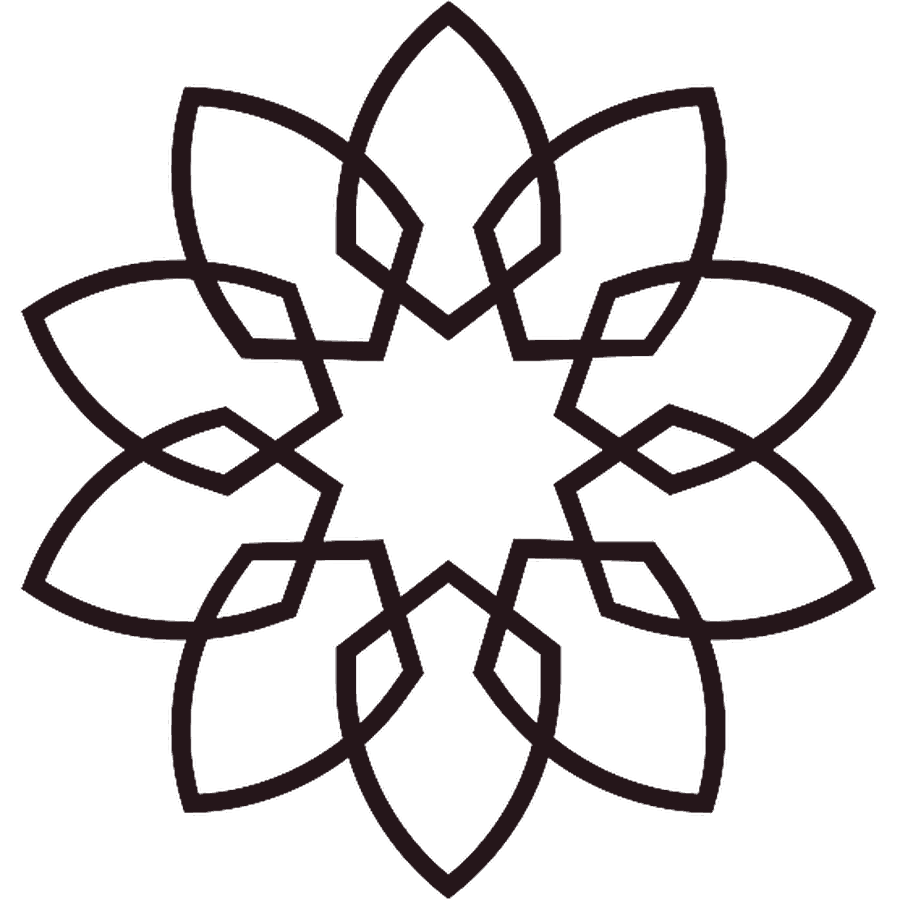

Remembrance of Allah
Daily adhkār
The morning and evening remembrances, and the adhkār after prayer — tap each circle to count. Your progress keeps for the day, then resets fresh.

The morning and evening remembrances, and the adhkār after prayer — tap each circle to count. Your progress keeps for the day, then resets fresh.
Loading…
A selection of the essential authentic adhkār. For the complete collection see Ḥiṣn al-Muslim (Fortress of the Muslim) — available in our downloads.